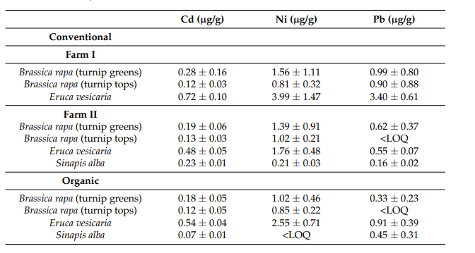
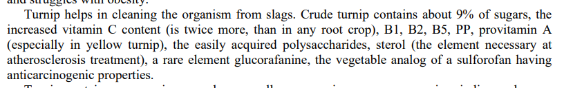

Comparem nap ecològic i convencional: quin té més nutrients segons la ciència i segons la IA?
Nom en llatí de nap:Brassica rapa subsp. rapa
Nom en anglès de nap:Turnip
He trobat diferents articles científics que estudian el meu tema i els trobareu a continuació en format APA7. APA7 es una forma d'escriure un article cientific
- Cámara-Martos, F.; Sevillano-Morales, J.; Rubio-Pedraza, L.; Bonilla-Herrera, J.; de Haro-Bailón, A. Comparative Effects of Organic and Conventional Cropping Systems on Trace Elements Contents in Vegetable Brassicaceae: Risk Assessment. Appl. Sci. 2021, 11, 707. https://doi.org/10.3390/app11020707
- Sempre posem primer els autors pel cognom y les inicials del nom,després l'any entre parentesi, el titol,després el nom de la revista abreujat, el volum i les pagines que te.
Concentración total de oligoelementos (materia seca) en las especies de Brassicaceae analizadas (media ± desviación estándar).

Dades analitzades:
- Co
- Cr
- Cu
- Fe
- Mn
- Zn
El que posa en l'article
Pregunta: El nap ecològic té més ferro que el nap convencional ?
El que diu ChatGPT.


Error ChatGPT


ChatGPT admès el seu error

Solució: Va trobar que les concentracions de ferro en naps ecològics eren inferiors a les dels convencionals en aquest cas particular.
Concentració total de metalls pesants (matèria seca) en espècies de Brassicaceae analitzades (mitjana ± desviació estàndard).

Dades analitzades:
- Cd (µg/g)
- Ni (µg/g)
- Pb (µg/g)
El que posa en l'article.
Pregunta: Les turnip greens cultivades a la Farm I presenten una concentració de plom (Pb) més alta que les cultivades al sistema orgànic ?
El que diu ChatGPT.


ChatGPT ha trobat l'article que estava fent servir.

Figure 1. Simulated data and fitted probabilistic distribution for Co, Cr, Cu, Fe, Mn and Zn in conventional Brassicas.

Figura 2. Dades simulades i distribució probabilística ajustada per a Co, Cr, Cu, Fe, Mn i Zn en brassicàcies orgàniques.

Figura 3. Dades simulades i distribució probabilística ajustada per a Cd, Ni i Pb en Brassicàcies convencionals.

Figura 5. Dades simulades i distribució probabilística ajustada per a Cd, Ni i Pb en Brassicàcies orgàniques.

Solució:
- Aylaj, M.; Sisouane, M.; Tahiri, S.; Mouchrif, Y.; El Krati, M. (2023). Effects of Humic Acid Extracted from Organic Waste Composts on Turnip Culture (Brassica rapa subsp. rapa) in a Sandy Soil. J. Ecol. Eng., 24(7), 345–359. https://doi.org/10.12911/22998993/163510
Característiques físiques i químiques dels composts utilitzats en experiments amb plantes de nap

El que posa en l'article.
Pregunta: C3 té més Zn o C4?
El que diu ChatGPT.
El que posa en l'article es similar que el que posa en l'article.
- Suhareva, T. N.; Sergienko, I. V. (2020). Proecting of functional structure of fish product. IOP Conf. Ser.: Earth Environ. Sci., 422, 012055. https://doi.org/10.1088/1755-1315/422/1/012055
Composició nutricional i fitoterapèutica del nap cru: vitamines, polsacarids i compostos anticancerígens

Dades analitzades:
- Sucres
- Vitamina C
- Vitamines B1, B2, B5, PP
- Polisacàrids
- Esteroides vegetals (sterols)
- Glucorafànina
El que posa en l'article
Li vaig demanar que l'interpreti aquest estudi però el ChatGPT diu que no trobava l'estudi

Pregunta:El nap conté el doble de vitamina C que altres arrels comestibles?
El que diu ChatGPT

Les dades que dona el ChatGpt és diferent del que hi ha en l'estudi. Li dic que hi ha difèrencia, i ell contesta:
Ah, ara entenc millor! Sí, hi ha diferències notables entre les dades que et vaig donar i les que apareixen en aquest estudi. Vegem-les amb deteniment:

Error ChatGPT

Chatgpt admès que era un error seu.
- Termine, E.; Lairon, D.; Taupier-Letage, B.; Gautier, S.; Lafont, R.; Lafont, H. (1987). Yield and content in nitrates, minerals and ascorbic acid of leeks and turnips grown under mineral or organic nitrogen fertilizations. Plant Foods Hum. Nutr., 37, 321–332.
Taula 4. Contingut mineral dels naps collits el 20 de desembre Tractament

Dades analitzades:
- P (Fòsfor)
- Na (Sodi)
- K (Potassi)
- Mg (Magnesi)
- Ca (Calci)
- Fe (Ferro)
- Cu (Coure)
- Mn (Manganès)
El que posa en l'article.
Pregunta: Nap conté més minerals Cu que Mn?
El que contesta ChatGPT:

ChatGPt ha contestat bé.
Solucó: El nap cru, en una porció de 100 grams, conté aproximadament 0,05 mg de coure (Cu) i 0,16 mg de manganès (Mn). Això indica que el nap té més manganès que coure, i no al revés.